Christmas in Poland
Discover Wigilia, the twelve-dish feast, the Christmas wafer, and the warm customs that make a Polish Christmas unforgettable.
Explore the Traditions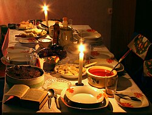
A season of light and family
In Poland, Christmas (Boże Narodzenie) is one of the most important holidays of the year. The celebrations center around Wigilia, the Christmas Eve supper, which begins when the first star appears in the sky.
Polish Christmas blends Catholic faith with ancient folk customs—sharing a wafer, setting an extra place at the table, and singing carols that have been passed down for centuries.
- Wigilia — the Christmas Eve dinner on December 24th
- 12 meatless dishes — one for each apostle
- Opłatek — the Christmas wafer shared with loved ones
- Gwiazdka — the first star that signals dinner can begin
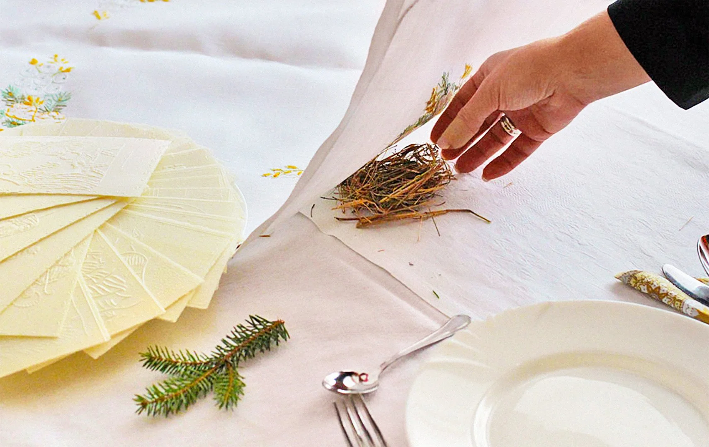
Wigilia — The Christmas Eve Supper
The most awaited evening of the Polish year
The First Star
Families wait for Gwiazdka (the first star) to appear before sitting down to dinner, in memory of the Star of Bethlehem.
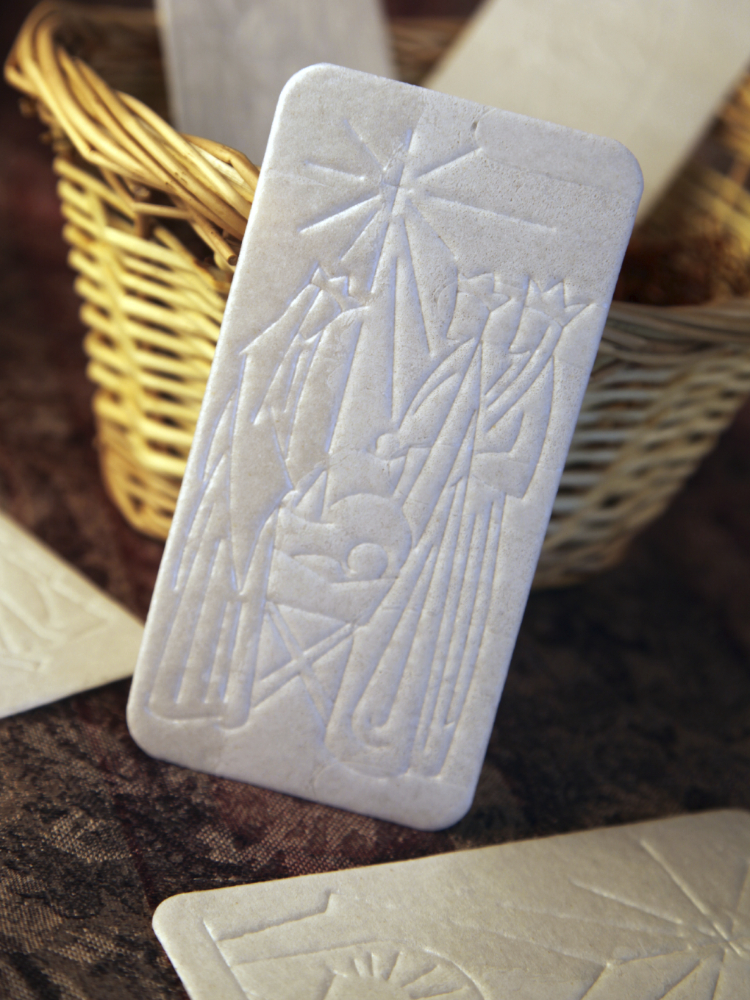
Sharing Opłatek
Before eating, everyone breaks and shares the opłatek wafer, exchanging wishes for health, happiness, and peace in the coming year.
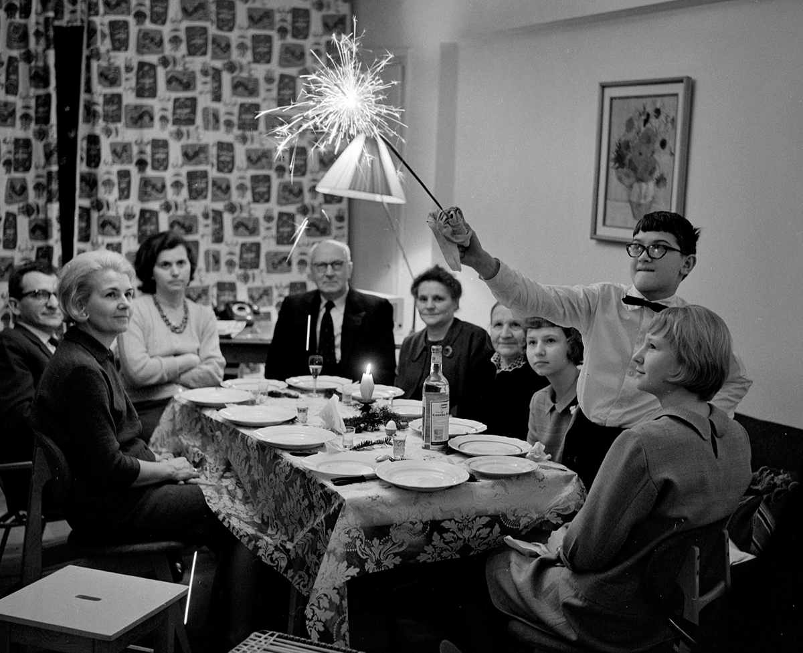
The Extra Place Setting
An empty seat is left at the table for an unexpected guest—or to remember loved ones who cannot be with the family.
Straw Under the Tablecloth
A handful of hay is placed under the white tablecloth to recall the manger where Jesus was born.
The Twelve Dishes
A traditional meatless Wigilia feast
Polish Wigilia features twelve meatless dishes, symbolizing the Twelve Apostles. Everyone is encouraged to taste each one.

Red Borscht
Beetroot soup served with small dumplings (uszka) filled with mushrooms.
Fried Carp
The iconic Christmas Eve fish, often bought alive days before and kept in the bathtub.
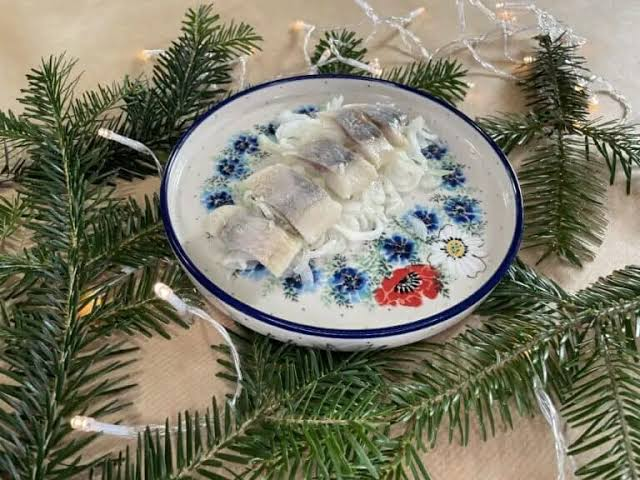
Herring
Served in oil, cream, or with onions—a staple on every Wigilia table.
Cabbage & Mushrooms
Sauerkraut or cabbage stewed with dried mushrooms, often as a filling for pierogi too.
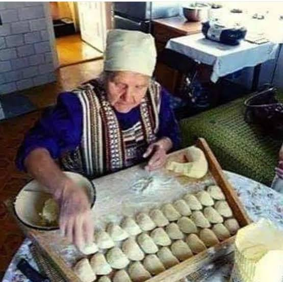
Pierogi
Dumplings stuffed with sauerkraut and mushrooms—never meat on Christmas Eve.
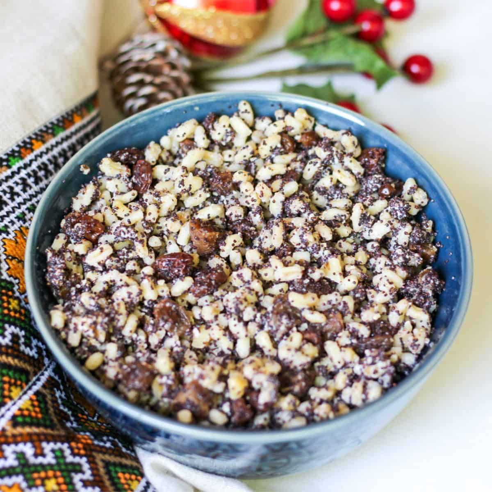
Kutia
A sweet dessert of cooked wheat, poppy seeds, honey, and nuts, especially popular in eastern Poland.
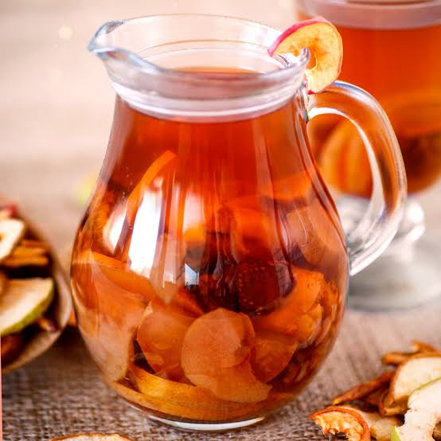
Dried Fruit Compote
A warm drink made from stewed dried plums, apples, and pears.
Poppy Seed Roll
Makowiec—a sweet yeast roll filled with ground poppy seeds, a classic Christmas dessert.
Customs & Symbols
More than just a meal
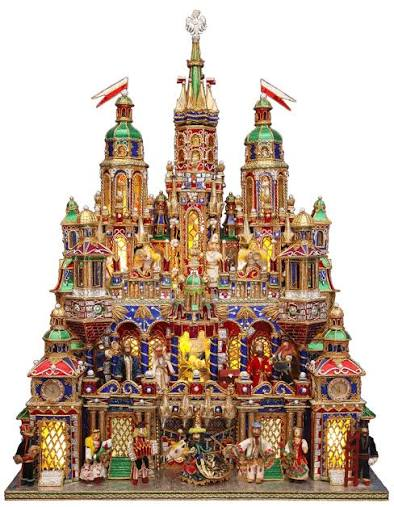
Szopka Krakowska
A colorful, elaborate Kraków-style nativity scene. Building szopki is a beloved folk art tradition, often turned into competitions.
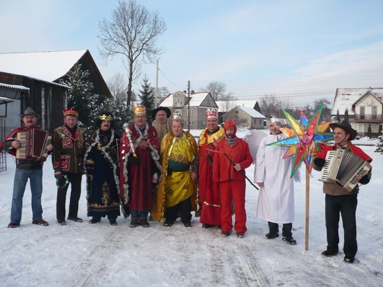
Kolędnicy
Carol singers go from house to house after Christmas Eve, sometimes carrying a szopka or a star, singing for small treats and donations.
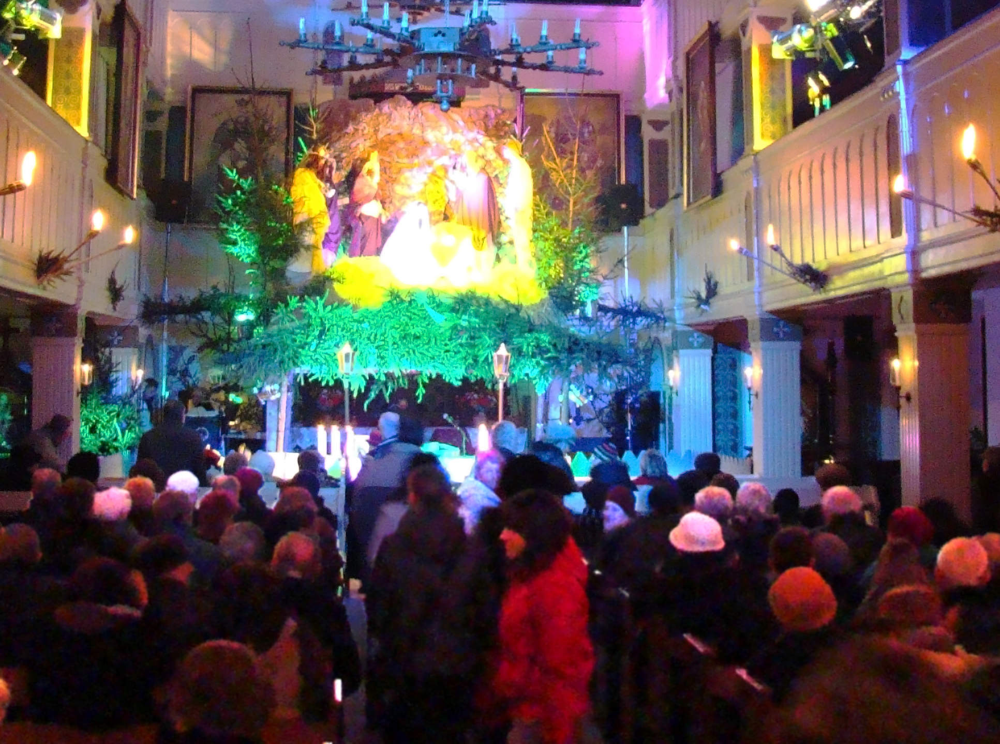
Pasterka
The Shepherds' Mass held at midnight on Christmas Eve, when families gather in church to celebrate the birth of Jesus.
Kolędy — Polish Christmas Carols
Music that fills the season
After Wigilia, families gather to sing kolędy—traditional Polish Christmas carols. Some of the best-known include:
- Bóg się rodzi ("God is Born") — one of the oldest and most cherished Polish carols
- Przybieżeli do Betlejem ("They Hurried to Bethlehem")
- Lulajże Jezuniu ("Sleep, Little Jesus") — a gentle lullaby carol
- W żłobie leży ("He Lies in a Manger")
Caroling often continues well past Christmas Day, through the New Year and even until Candlemas on February 2nd.
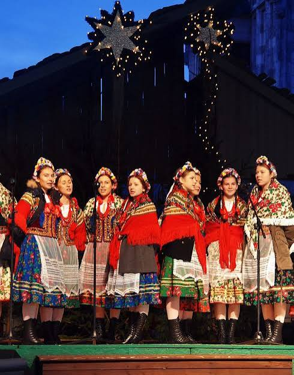
Wesołych Świąt!
Merry Christmas from Poland. May your holidays be filled with warmth, family, and the spirit of Wigilia.
Share this page